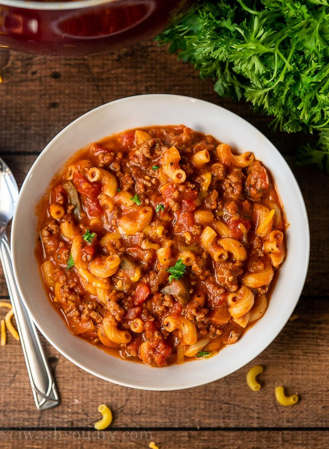

Grandma's Goulash

Description
An American style goulash that tastes like a warm hug on a cold day! A a beefy mix of onion, green bell peppers, garlic, and tomatoes will surely satisfy any craving you may have.
Servings : 10
Estimated time : 35 minutes
Ingredients
- One tablespoon of olive oil
- One cup onion (diced)
- One green bell pepper (diced)
- Two pounds of ground beef (80/20 mix if possible)
- Three teaspoons of garlic (minced)
- Two, 15 ounce cans of tomato sauce
- Two, 15 ounce cans of petite diced tomatoes
- Three cups of beef broth
- Three tablespoons of Worcestershire Sauce
- Two teaspoons of seasoned salt
- Two tablespoons of Italian Seasoning
- Three bay leaves
- Two cups of macaroni noodles (dried)
- Chedder cheese (shredded)
- Sour cream (optional)
- Hot sauce (optional)
Equipment
- A large pot (preferably a dutch oven)
- Wooden spoon
Directions
- Add olive oil to pot over medium high heat.
- Add the onion, bell pepper, and ground beef then cook until beef is no longer pink
- Drain any excess fat and return pot to stove top.
- Add in garlic and stir until fragrant (30 seconds).
- Pour in the tomato sauce, diced tomatoes, beef broth, Worcestershire Sauce, seasoned salt, Italian Seasoning, bay leaves, and dried macaroni noodles.
- Stir and bring to a boil.
- Reduce heat to a light boil and stir occasionally until pasta is tender (20 minutes).
- Remove bay leaves and take off heat.
- Portion out into a bowl and top with cheddar cheese, sour cream, and hot sauce.
Back to home